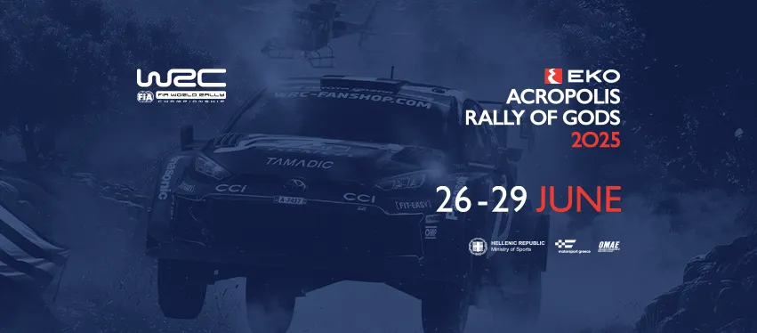
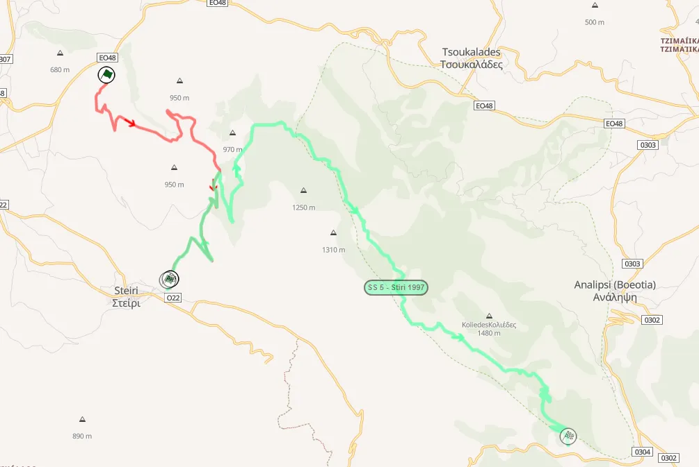

Reacting to the 2025 Acropolis Rally Route
The itinerary for the 2025 Acropolis Rally has been revealed. The event returns to its usual summer slot for this year, and sees some changes to its route. Eleftherohori is absent from the event for the first time since 2015, Karoutes returns after not featuring in 2024, Stiri returns for the first time since 1997 (!) and Smokovo is a brand new stage, not related to the old Acropolis stage from the 90s.
The rally's ceremonial start will once again be in Athens, returning to the format used from 2021 to 2023, with the rally making its way from Athens to Loutraki and eventually Lamia on Friday.

Thursday again features the Shakedown in Lygaria, after which the crews will head to Athens for the Ceremonial Start under the Acropolis, with an SSS following, the location of which is undisclosed for now. The cars will then head to Loutraki for an overnight halt.
Friday is the first full day of the rally, featuring 6 stages, only one of which is repeated. SS2/4 Aghii Theodoroi is the same as last year, with the start extended slightly. SS3 Loutraki is the same as last year, essentially being the Pissia stage. After a second run of Aghii Theodoroi, the crews will head to SS5 Thiva, which is slightly modified for this year, with the stage having a new start location, ditching the mickey mouse section the stage had in 2021 and 2024.
SS6 Stiri is essentially a new stage, not having been used in the WRC in this millenium. Based on the liaison mileage, I believe the start will be in the wind farm where the Distomo stage from the 2022 Historic Acropolis had its start, with the stage then following the old route until the finish.

How I predict that the stage will look like
SS7 Rengini is the last stage of the day, and is a carbon copy of the stage used in 2022 on Sunday. No Elatia-Zeli section this year.
Saturday features two loops of 3 stages. SS8/11 Pavliani ditches the Koumaritsi section that was used last year, and instead follows the "classic" route from Pavliani to Mavrolithari. SS9/12 Karoutes, returns after a year's absence, and serves as the day's closer. Unfortunately, the stage will not feature the iconic downhill Bauxites section, which is a highlight of the rally. SS10/13 Inohori is back again, with the stage being a positive addition to last year's event. This year the stage will have two passes instead of one.
Karoutes returns after a year's absence
Sunday is actually quite long compared to the typical rally ending day, with this one running close to 100km. This is the longest mileage on a Sunday since Rally Mexico in 2016!
SS14/16 Smokovo is a brand new stage! It's just south of the Smokovo lake, and could use some sections that were used in 1997 as part of the Makrirrahi stage, with the start perhaps near the town of Ktimeni. I predict that there will be a river crossing in this stage, (if the river is not dried up), and from what I was told the roads here are vaguely reminiscent of the ones used in New Zealand!
SS15/17 is the legendary Tarzan, returning as the event's Power Stage for the first time since 2021, although this year both runs of the stage will be 23km, with the stage being one of the longest Power Stage in recent time.
Overall, I am quite happy with the event's route. Eleftherohori is obviously a notable absence from the itinerary, but it has been a long time coming, with the teams complaining about the roughness of the stage especially on the second pass, as well as there usually being issues with spectator safety. As for what I would change, honestly, not much. Ι would much prefer if the Bauxites stage from 2021 or 2022 was used instead of Karoutes, or ideally the long stage from 2023.
I am not the biggest fan of Loutraki, but that can't be changed with the way Aghii Theodoroi is, and the latter is a very nice stage. I am a big fan of Prodromos a stage last used in 1990, but I am honestly content with Stiri, which is just to the north. So all in all, no complaints and I am eagery awaiting for the rally week to come!


Comments